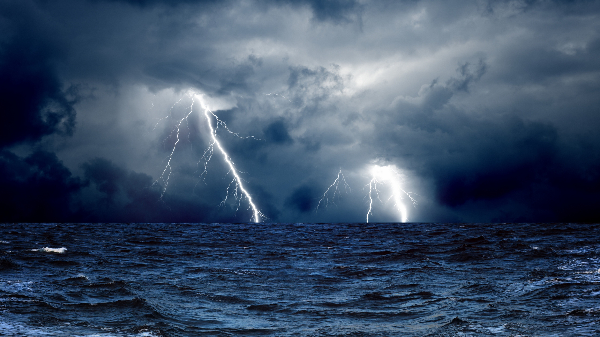

The most important thing is to enjoy your life - to be happy - it's all that matters. Audrey Hepburn “ I have found that if you love life, life will love you back. Arthur Rubinstein “ Life is really simple, but we insist on making it complicated. Confucius “ In the end, it's not the years in your life that count. It's the life in your years. Abraham Lincoln “ Life is inherently risky. There is only one big risk you should avoid at all costs, and that is the risk of doing nothing. Denis Waitley “ We all have two lives. The second one starts when we realize we only have one. Tom Hiddleston “  You get in life what you have the courage to ask for. Oprah Winfrey “ People have different reasons for the way they live their lives. You cannot put everyone's reasons in the same box. Kevin Spacey “ Mellow doesn't always make for a good story, but it makes for a good life. Anne Hathaway “ Work like you don't need the money, love like you've never been hurt and dance like no one is watching. Randall G Leighton “ When one door closes, another opens; but we often look so long and so regretfully upon the closed door that we do not see the one that has opened for us. Alexander Graham Bell “ There comes a time when you have to choose between turning the page and closing the book. Josh Jameson “ To live is the rarest thing in the world. Most people exist, that is all. Oscar Wilde “ Life is what happens to you while you're busy making other plans. Allen Saunders “ The purpose of lif is not to be happy. It is to be useful, to be honorable, to be compassionate, to have it make some difference that you have lived and lived well. Ralph Waldo Emerson “ Be not afraid of life. Believe that life is worth living, and your belief will help create the fact. Henry James “ Life is a progress and not a station. Ralph Waldo Emerson “ To live is so startling it leaves little time for anything else. Emily Dickinson “ It is not the length of life, but depth of life. Ralph Waldo Emerson “ Life is 10% what happens to us and 90% how we react to it. Dennis P. Kimbro “ Be not afraid of life. Believe that life is worth living, and your belief will help create the fact. illiam James “ Many of life's failures are experienced by people who did not realize how close they were to success when they gave up. Thomas Edison “ Our lives begin to end the day we become silent about things that matter. Martin Luther King Jr. “ Life is about making an impact, not making an income. Kevin Kruse Strive not to be a success, but rather to be of value. Albert Einstein “ An unexamined life is not worth living. Socrate “ Your time is limited, so don't waste it living someone else's life. Steve Jobs “ The two most important days in your life are the day you are born and the day you find out why. Mark Twain " Accept responsibility for your life. Know that it is you who will get you where you want to go, no one else.